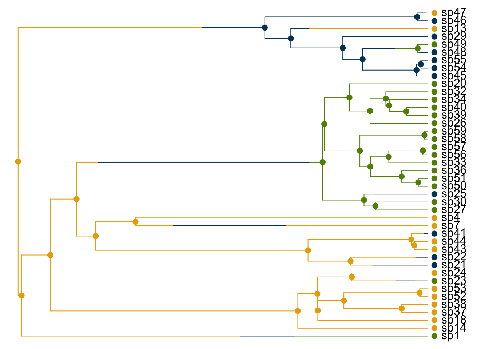

10 Trait Dependent Diversification
The previous chapter used a variety of methods to estimate the rate of diversification in a phylogeny. This is an interesting and contentious field of study which allows us to ask marcoevolutionary questions. In this chapter, we will extend this approach to model the effects of trait evolution on diversification.
10.1 Binary traits: BiSSE
BiSSE stands for Binary State Speciation and Extinction model.
Let’s start by simulating a tree and binary character using the tree.bisse function in the package diversitree (FitzJohn 2012). We need to specify parameters for the simulation. These parameters are (in order);
- The speciation rate with the trait in state 0: \(\lambda_{0}\)
- The speciation rate with the trait in state 1: \(\lambda_{1}\)
- The extinction rate with the trait in state 0: \(\mu_{0}\)
- The extinction rate with the trait in state 1: \(\mu_{1}\)
- The probability of transitioning from state 0 to 1: \(q_{01}\)
- The probability of transitioning from state 1 to 0: \(q_{10}\)
For this example, we will imagine a scenario in which lineages are twice as likely to speciate with the trait in state 1 than in state 0 (\(\lambda_{1} = 2 \times\lambda_{0}\)). Extinction rates will not be different in either state (\(\mu_{0} = \mu_{1}\)) and the probability of transitioning between states is the same in either direction (\(q_{01} = q_{10}\)).
library(diversitree)
pars <- c(.1,.2,.03,.03,.01,.01)
set.seed(42)
phy <- tree.bisse(pars, max.t = 30, x0 = 0)
states <- phy$tip.stateWe can extract the history of the trait’s evolution using history.from.sim.discrete. Note that although this looks like an ancestral state reconstruction, it isn’t. This is the actual history of the trait we have simulated.
Next we use the function make.bisse with the tree and the named vector of states. This creates a likelihood function that we will go on to use in our analysis.
To perform a maximum likelihood search, we will also need to select a starting point. The function starting.point.bisse produces a guess for a starting point based on the character-independent birth-death fit.
lambda0 lambda1 mu0 mu1 q01 q10
0.09380372 0.09380372 0.00000000 0.00000000 0.01876074 0.01876074 Now that we have our likelihood function and our starting point for each parameter, we can start the likelihood search using find.mle. Depending on the size and complexity of your tree and data, this step may take a while.
The resulting object contains the log likelihood of the model (lnLik) and the estimates for all of the parameters.
[1] -152.5654lambda0 lambda1 mu0 mu1 q01 q10
0.089 0.150 0.000 0.052 0.018 0.022 In this case we can compare these parameters to the known values we set for the simulation. The estimates are not exactly the same and perhaps a better set of starting estimates would be helpful. However, we can see that \(\lambda_{1} > \lambda_{0}\) as we know it should be.
Let’s look at testing the hypothesis that speciation rates are different when the trait we are studying is in different states. We can do this by constraining the speciation rates to be equal in a new model using constrain.
[1] -153.0321We can put the estimated parameters together in a table for ease of comparison.
| lambda0 | lambda1 | mu0 | mu1 | q01 | q10 | |
|---|---|---|---|---|---|---|
| full | 0.089 | 0.150 | 0 | 0.052 | 0.018 | 0.022 |
| equal.l | 0.094 | 0.094 | 0 | 0.000 | 0.016 | 0.030 |
The final thing to do is test the differnece between the new and old models.
Df lnLik AIC ChiSq Pr(>|Chi|)
full 6 -152.56 317.13
model 1 5 -153.03 316.06 0.93342 0.334The ANOVA table tells us that there is no significant difference in fit between the two models (\(\chi^{2} = 0.93, p = 0.33\)).
If you’re not a fan of maximum likelihood estimation you can run the same analysis by MCMC. First we need to set a prior as the starting point for our analysis. The function make.prior.exponential will allow us to set an exponential prior of \(\frac{1}{2r}\). Remember that \(r = \lambda - \mu\).
In our final mcmc analysis we will need to provide an argument called simply w. This is a so-called tuning parameter for the sampling that the mcmc function will perform. The function uses a process called slice sampling (Neal 2003). In slice sampling, the parameter w affects how many function evaluations are required between sample updates. According to the documentation for the function, the optimal value for w is equal to the width of the high probability region we are searching through. The easiest way to work this out is to run a short chain and use the obseved range in the results.
set.seed(42)
tmp <- mcmc(lik, fit$par, nsteps=100, prior=prior,
lower=0, w=rep(1, 6), print.every=0)
w <- diff(sapply(tmp[2:7], range))To run our full analysis, we will need to use a much longer chain. I’ve gone for 10,000 here. Be aware that this will take a little while.
We can plot the distributions of \(\lambda_{0}\) and \(\lambda_{1}\) using the function profiles.plot. Here we can see the true values as lines. The shaded areas and bars along the x axis both represent the 95% confidence intervals of the sample.
col <- c("#004165", "#eaab00")
profiles.plot(samples[c("lambda0", "lambda1")], col.line=col, las=1,
xlab="Speciation rate", legend="topright")
abline(v=c(.1, .2), col=col)
10.2 Multi-state traits: MuSSE
BiSSE works well with binary traits but what about categrorical traits with more than two states? For this we can use an extension of the BiSSE model called MuSSE (Multiple State Speciation and Extinction).
Let’s start with a simulated example. The traits we simulate will have three states (coded numerically) and transitions are only possible between adjacent states (you can’t go from state 1 to 3 or 3 to 1). All other transition rates will be equal. In this case we need to specify the parameters in the following order:
\[\lambda_{1} \;\; \lambda_{2} \;\; \lambda_{3} \;\; \mu_{1} \;\; \mu_{2} \;\; \mu_{3} \;\; q_{12} \;\; q_{13} \;\; q_{21} \;\; q_{23} \;\; q_{31} \;\; q_{32}\]
pars <- c(.1,.15, .2, #lambda
.03, .045, .06, #mu
.05, 0, #q12 q13
.05, .05, #q21 q23
0, 0.05) #q31 q32Now we can simulate our tree and data using tree.musse.
We can extract the history of the simulated trait with history.from.sim.discrete and plot it over the tree.
col <- c("#eaab00", "#004165", "#618e02")
h <- history.from.sim.discrete(phy, 1:3)
plot(h, phy, cex=1, col=col, no.margin=TRUE, font=1)
Next we must make the likelihood function in much the same way as we did for BiSSE but this time using the function make.musse.
For our analysis, we’ll start with a very simple model. The simplest model is one in which all three speciation rates are the same (\(\lambda_{1} = \lambda_{2} = \lambda_{3}\)), all 3 extinction rates are the same (\(\mu_{1} = \mu_{2} = \mu_{3}\)) and all the non-zero transition rates are the same (\(q_{12} = q_{21} = q_{23} = q_{32}\)). Also, remember that \(q_{13}\) and \(q_{31}\) are still both 0.
lik.base <- constrain(lik, lambda2 ~ lambda1, lambda3 ~ lambda1,
mu2 ~ mu1, mu3 ~ mu1,
q13 ~ 0, q21 ~ q12,
q23 ~ q12, q31 ~ 0, q32 ~ q12)Just as with BiSSE, we need to set a starting point for the likelihood search, this time with the function starting.point.musse.
Now we can start the maximum likelihood search with find.mle.
[1] -153.4905lambda1 mu1 q12
0.201 0.139 0.055 To test if the speciation rate varies when the traits is in different states, we can run another model in which the values of \(\lambda_{1}\), \(\lambda_{2}\) and \(\lambda_{3}\) are unconstrained.
lik.lambda <- constrain(lik, mu2 ~ mu1, mu3 ~ mu1,
q13 ~ 0, q21 ~ q12,
q23 ~ q12, q31 ~ 0, q32 ~ q12)
fit.lambda <- find.mle(lik.lambda, p[argnames(lik.lambda)])In this case the new model is not significantly better than the minimal model (\(\chi^{2} = 2.67, \; p = 0.263\)). Keep in mind that when we simulated the data, we specified that \(\lambda\) was indeed different between different states. It’s probable that we haven’t been able to detect this on such a small tree (n = 42).
Df lnLik AIC ChiSq Pr(>|Chi|)
minimal 3 -153.49 312.98
free.lambda 5 -152.16 314.32 2.6651 0.2638Small trees are not good fits for these methods. Generally, the larger the tree the more power you have. Here is the model comparison for the same analysis with the same parameters but simulated on a tree with 1000 tips. As you can see, the analysis shows very clearly that the model in which \(\lambda\) is allowed to vary is a much better fit (\(\chi^{2} = 33.35, \; p < 0.001\)).
| Df | lnLik | AIC | ChiSq | Pr(>|Chi|) | |
|---|---|---|---|---|---|
| minimal | 3 | -3694.195 | 7394.390 | NA | NA |
| free.lambda | 5 | -3677.520 | 7365.041 | 33.34883 | 1e-07 |
10.3 Quantitative traits: QuaSSE
Dealing with quantitative traits in models like these is lsightly less straightforward. Categorical traits are well defined and we can model the transition rates between states. Deciding when something like body mass has undergone significant evolutionary change is a little more difficult. This is the same problem we faced with continuous characters in ancestral state reconstruction and it will come up again when we look at convergence.
For diversification, we have the QuaSSE (Quantitative State Speciation and Extinction) model.
First we need to specify some functions to use. For lambda we will use a sigmoidal function with an inflection at x = 0. This means we will have an increasing rate of speciation reaching a plateau. We can specify this with the function sigmoid.x.
Next we can specify the model of character evolution for our trait simulation. We will be going with Brownian motion and we will set the diffusion parameter to 0.025. To specify all this, we can use the function make.brownian.with.drift.
Now as with BiSSE and MuSSE, we can simulate the tree and data using tree.quasse.
Extract the trait states and specify the standard deviation. For this example, assume the standard deviation for all tips is 1/200.
Next we create the likelihood function, this time specifying the speciation and extinction functions.
Now to calculate the starting point. This is a little more involved than BiSSE and MuSSE! starting.point.quasse gives us constant rates for each parameter.
lambda mu diffusion
0.16107838 0.02569057 0.03164062 Let’s ignore drift for our first model (drift ~ 0). The function argnames will return the names of parameters we will need to supply.
[1] "l.y0" "l.y1" "l.xmid" "l.r" "m.c" "diffusion"Next, we select the starting point values. For l.y0 and l.y1, we will take the suggested value of \(\lambda\) from starting.point.quasse (p[1]). For l.xmid we will take the mean of the state values (mean(states)). l.r is set at 1. m.c (\(\mu\)) and diffusion are taken straight form p (p[2:3])
l.y0 l.y1 l.xmid l.r m.c diffusion
0.16107838 0.16107838 0.57097062 1.00000000 0.02569057 0.03164062 One final thing before we run the search. We now need to specify the lower bounds for the search for each parameter..
Finally we are ready to run our analysis! As with BiSSE and MuSSE, we will do so with find.mle. This will take some time.
fit <- find.mle(lik.nodrift, p.start,
control=list(parscale=.1),
lower=lower, verbose=0)
round(coef(fit),3) l.y0 l.y1 l.xmid l.r m.c diffusion
0.000 0.220 0.238 28961.248 0.000 0.029 Let’s compare this model to one in which \(\lambda\) is constant.
lik.constant <- constrain(lik.nodrift,
l.y1 ~ l.y0,
l.xmid ~ 0,
l.r ~ 1)
fit.constant <- find.mle(lik.constant,
p.start[argnames(lik.constant)],
control=list(parscale=.1),
lower=0, verbose=0)
knitr::kable(anova(fit, constant=fit.constant))| Df | lnLik | AIC | ChiSq | Pr(>|Chi|) | |
|---|---|---|---|---|---|
| full | 6 | -51.73395 | 115.4679 | NA | NA |
| constant | 3 | -55.15222 | 116.3044 | 6.836543 | 0.0772943 |
Once again we see no significant difference (\(\chi^{2} = 6.84, \; p = 0.08\)). Again this probably due to the small tree and a larger one would give us more power.
10.3.1 QuaSSE primate example
To demonstrate how QuaSSE can be used in research, let’s investigate trait dependent diversification in primates using some existing data on primate body mass (Fitzjohn 2010).
We will need to log-transform mass and we will also assume the standard deviation is \(\frac{1}{50}\).
Starting point parameter estimates.
lambda mu diffusion
0.19072726 0.11034810 0.03251953 Now we will create a piecewise linear function using make.linear.x. The function is linear between xr[1] and xr[2] and flat outside this range.
Now let’s create a shortcut because we will be analysing several models. First we will create a function that will take our speciation and extinction functions and buld our model for us using make.quasse. The second function simply constrains drift to zero.
make.primates <- function(lambda, mu)
make.quasse(phy, mass, mass.sd, lambda, mu)
nodrift <- function(f)
constrain(f, drift ~ 0)Now we can use these functions to build our likelihood functions. We are keeping \(\mu\) constant in each case.
f.c <- make.primates(constant.x, constant.x)
f.l <- make.primates(linear.x, constant.x)
f.s <- make.primates(sigmoid.x, constant.x)
f.h <- make.primates(noroptimal.x, constant.x)We will start by fitting the constant model (f.c) with no drift.
control <- list(parscale=.1, reltol=0.001)
mle.c <- find.mle(nodrift(f.c), p, lower=0, control=control, verbose=0)Next we calculate starting points for our other models.
p.c <- mle.c$par
p.l <- c(p.c[1], l.m=0, p.c[2:3])
p.s <- p.h <- c(p.c[1], p.c[1], mean(xr), 1, p.c[2:3])
names(p.s) <- argnames(nodrift(f.s))
names(p.h) <- argnames(nodrift(f.h))Once we have our starting points, we are ready to fit each of the models. Each of these lines may take a while to run.
mle.l <- find.mle(nodrift(f.l), p.l, control=control, verbose=0)
mle.s <- find.mle(nodrift(f.s), p.s, control=control, verbose=0)
mle.h <- find.mle(nodrift(f.h), p.h, control=control, verbose=0)
anova(mle.c, linear=mle.l, sigmoidal=mle.s, hump=mle.h)| Df | lnLik | AIC | ChiSq | Pr(>|Chi|) | |
|---|---|---|---|---|---|
| minimal | 3 | -841.4029 | 1688.806 | NA | NA |
| linear | 4 | -836.0697 | 1680.139 | 10.66629 | 0.0010911 |
| sigmoidal | 6 | -832.6038 | 1677.208 | 17.59805 | 0.0005323 |
| hump | 6 | -829.0036 | 1670.007 | 24.79861 | 0.0000170 |
The ANOVA table shows us that the best fit is the hump model where speciation rate follows a hump shaped fit.
The next lines (which will again take some time) will start with parameters from the previous constrained models and add the drift parameter.
mle.d.l <- find.mle(f.l, coef(mle.l, TRUE), control=control, verbose=0)
mle.d.s <- find.mle(f.s, coef(mle.s, TRUE), control=control, verbose=0)
mle.d.h <- find.mle(f.h, coef(mle.h, TRUE), control=control, verbose=0)We should add these new models to the ANOVA table to compare them all. We can see that in all cases the fit of the model is improved by the addition of drift.
knitr::kable(anova(mle.c, linear=mle.l, sigmoidal=mle.s,
hump=mle.h, drift.linear=mle.d.l,
drift.sigmoidal=mle.d.s, drift.hump=mle.d.h))| Df | lnLik | AIC | ChiSq | Pr(>|Chi|) | |
|---|---|---|---|---|---|
| minimal | 3 | -841.4029 | 1688.806 | NA | NA |
| linear | 4 | -836.0697 | 1680.139 | 10.66629 | 0.0010911 |
| sigmoidal | 6 | -832.6038 | 1677.208 | 17.59805 | 0.0005323 |
| hump | 6 | -829.0036 | 1670.007 | 24.79861 | 0.0000170 |
| drift.linear | 5 | -832.5001 | 1675.000 | 17.80563 | 0.0001360 |
| drift.sigmoidal | 7 | -830.2691 | 1674.538 | 22.26745 | 0.0001773 |
| drift.hump | 7 | -825.3671 | 1664.734 | 32.07150 | 0.0000018 |
When we extract the drift parameters, we can see that in all cases they are positive, indicating that mass is increasing over the tree on average.
c(linear=coef(mle.d.l)[["drift"]],
sigmoidal=coef(mle.d.s)[["drift"]],
hump=coef(mle.d.h)[["drift"]]) linear sigmoidal hump
0.10458477 0.06776915 0.07929087 So the hump model with drift is the best fit to the data. The parameters of this model tell us that \(\lambda\) peaks around a log body mass value of 8.43 (l.xmid) and a variance of 0.12 (l.s2).
When we plot the data alongside the tree, we can see that many of the species that fall within 2 standard deviations of the value of l.xmid are within the Cercopithecidae.
Figure 10.1: Body mass plotted alongside the primate phylogenetic tree. Species with a body mass in the range identified as having higher speciation rates are plotted in red
This suggests we might want to split the tree here and evaluate different models for each section of the tree much like we did with cetaceans in the previous chapter. In fact, the output of analysis with MEDUSA supports the idea that there has been a shift in diversification in the Cercopithecinae.
Appropriate aicc-threshold for a tree of 233 tips is: 6.687066.
Step 1: lnLik=-691.8978; aicc=1387.821; model=bd
Step 2: lnLik=-678.3882; aicc=1366.907; shift at node 386; model=bd; cut=node; # shifts=1
No significant increase in aicc score. Disregarding subsequent piecewise models.
Calculating profile likelihoods on parameter values.
Model.ID Shift.Node Cut.At Model Ln.Lik.part r epsilon r.low
1 1 234 node bd -491.4083 0.0756587 0.4497380 0.0627243
2 2 386 node bd -186.9799 0.2446490 0.0745145 0.1937557
r.high eps.low eps.high
1 0.0903268 0.2837926 0.5764245
2 0.3039223 0.0000000 0.3621622Before we proceed, it might be best to label the nodes so we can call the right one by name.
Now we can make split QuaSSE objects using make.quasse.split. The node we want here is node 153. In this case the speciation and extinction functions are both constant and the functions are the same on both sides of the split. For cases where functions may differ either side of the split, we can pass lists of functions. The Inf places the split at the base of the branch protuding from Node 153 (as in the MEDUSA plot above). A value of 0 would place the split at the node itself.
[1] "l.c.1" "m.c.1" "drift.1" "diffusion.1" "l.c.2"
[6] "m.c.2" "drift.2" "diffusion.2"The first set of parameters refer to the “background” tree and the second set refer to the “foreground” tree rooted at node 153.
Let’s constrain drift to be 0 and assume diffusion is the same in both trees.
[1] "l.c.1" "m.c.1" "diffusion.1" "l.c.2" "m.c.2" Next we generate a starting point using the starting points from the earlier model (p.c).
Let’s run the ML search.
We need to repeat this process for linear speciation functions and calculate starting points for these as well.
f.ll <- make.quasse.split(phy, mass, mass.sd, linear.x, constant.x, "nd153", Inf)
g.ll <- constrain(f.ll, drift.1 ~ 0, drift.2 ~ 0, diffusion.2 ~ diffusion.1)
g.lc <- constrain(g.ll, l.m.2 ~ 0)
g.cl <- constrain(g.ll, l.m.1 ~ 0)
p.cc <- coef(mle.cc)
p.ll <- c(p.cc[1], 0, p.cc[2:4], 0, p.cc[5])
names(p.ll) <- argnames(g.ll)Once again we run the ML search and save the results.
Finally, we generate starting points for models in which just one of the sections of the tree have linear speciation functions.
The ML searches for these models…
mle.lc <- find.mle(g.lc, p.lc, control=control, verbose=0)
mle.cl <- find.mle(g.cl, p.cl, control=control, verbose=0)Once all the searches are complete, we can finally compare each model in an ANOVA table.
knitr::kable(anova(mle.c, linear=mle.l, sigmoidal=mle.s, hump=mle.h,
part.constant=mle.cc, part.linear.bg=mle.lc,
part.linear.fg=mle.cl, part.linear=mle.ll))| Df | lnLik | AIC | ChiSq | Pr(>|Chi|) | |
|---|---|---|---|---|---|
| minimal | 3 | -841.4029 | 1688.806 | NA | NA |
| linear | 4 | -836.0697 | 1680.139 | 10.66629 | 0.0010911 |
| sigmoidal | 6 | -832.6038 | 1677.208 | 17.59805 | 0.0005323 |
| hump | 6 | -829.0036 | 1670.007 | 24.79861 | 0.0000170 |
| part.constant | 5 | -828.5921 | 1667.184 | 25.62147 | 0.0000027 |
| part.linear.bg | 6 | -828.2577 | 1668.515 | 26.29041 | 0.0000083 |
| part.linear.fg | 6 | -826.0173 | 1664.035 | 30.77116 | 0.0000009 |
| part.linear | 7 | -828.3231 | 1670.646 | 26.15951 | 0.0000294 |
We can clearly see that all models are significant improvements over the minimal model. The best fit is for part.linear.fg in which the foreground tree has a linear speciation model. We can see this as it has the lowest AIC value (AIC = 1664).
Inspecting the coeffiients shows us that the speciation rate in the foreground clade is a negative function of body size (l.m.2 = -0.193) and therefore that in this clade, an increasing body size is associated with a decreasing speciation rate.
l.c.1 m.c.1 diffusion.1 l.c.2 l.m.2 m.c.2
0.141392843 0.068877966 0.031964900 1.972507892 -0.193181732 0.005147044 10.4 Further info
Bibliography
FitzJohn, R.G. (2012) ‘Diversitree: Comparative Phylogenetic Analyses of Diversification in R’. Methods in Ecology and Evolution in press
Fitzjohn, R.G. (2010) ‘Quantitative Traits and Diversification’. Systematic Biology [online] 59 (6), 619–633. available from <https://liverpool.idm.oclc.org/login?url=https://search.ebscohost.com/login.aspx?direct=true&db=edselc&AN=edselc.2-52.0-78650666284&site=eds-live&scope=site>
Neal, R.M. (2003) ‘Slice Sampling’. Annals of Statistics [online] 31 (3), 705–741. available from <https://liverpool.idm.oclc.org/login?url=https://search.ebscohost.com/login.aspx?direct=true&db=edselc&AN=edselc.2-52.0-1642370803&site=eds-live&scope=site>